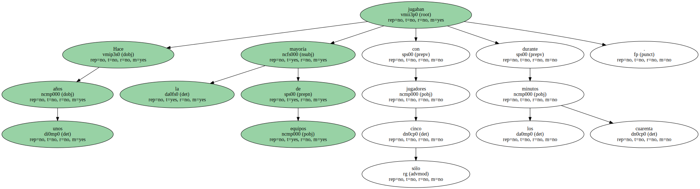
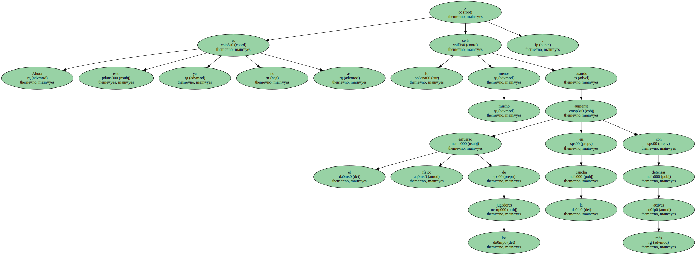
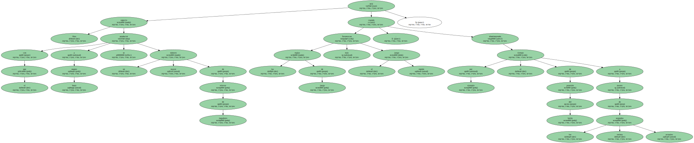
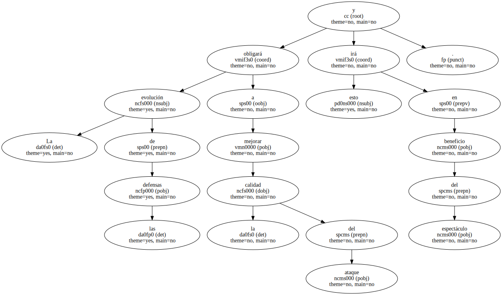
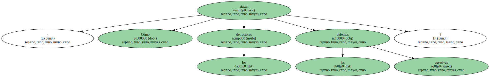
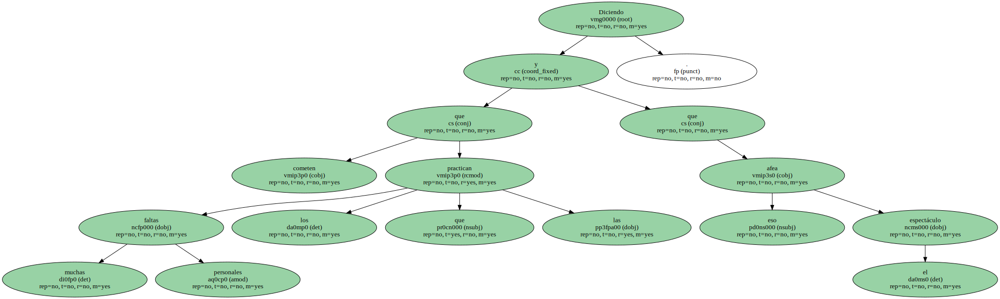
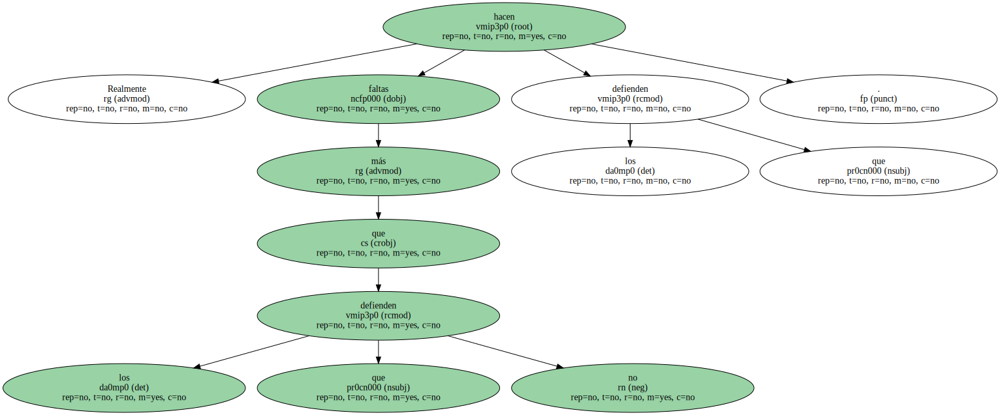
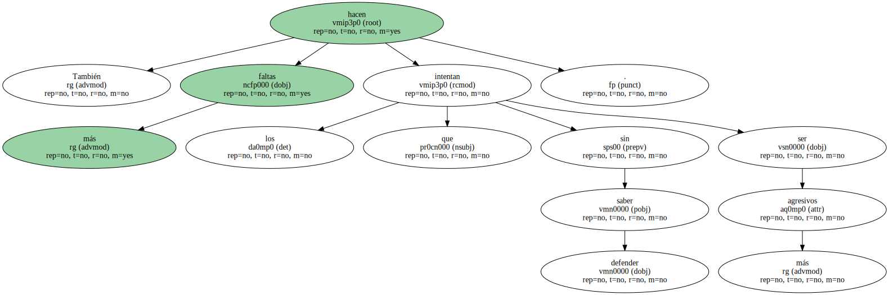
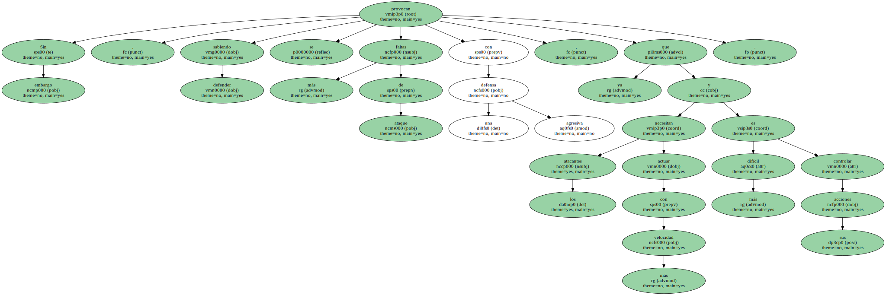
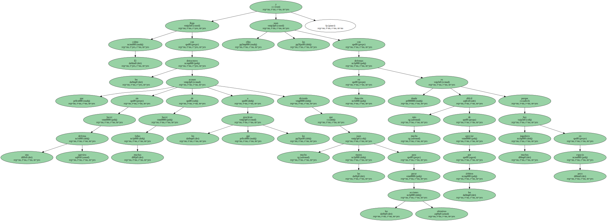

Hace unos años la mayoría de equipos jugaban con sólo cinco jugadores durante los cuarenta minutos.
Cualquiera que lo hiciese con más jugadores relevándolos habitualmente era considerado como un loco , o poco menos.

Ahora esto ya no es así y lo será mucho menos cuando aumente el esfuerzo físico de los jugadores en la cancha con defensas más activas.
Otro aspecto con el que a buen seguro se producirá un mayor número de relevos de jugadores será cuando las reglas de juego favorezcan más el juego rápido , por ejemplo disminuyendo el tiempo de posesión del balón a menos de los treinta segundos actuales.
La evolución de las defensas obligará a mejorar la calidad del ataque y esto irá en beneficio del espectáculo.
- Cómo atacan los detractores las defensas agresivas.
Diciendo que cometen muchas faltas personales los que las practican y que eso afea el espectáculo.
Realmente hacen más faltas los que defienden que los que no defienden.
También hacen más faltas los que sin saber defender intentan ser más agresivos.
Sin embargo , sabiendo defender se provocan más faltas de ataque con una defensa agresiva , ya que los atacantes necesitan actuar con más velocidad y es más difícil controlar sus acciones.
El colmo llega con los detractores que sin hacer una defensa agresiva acusan de hacer muchas faltas a los que las practican diciendo que usan mucho las manos para parar las acciones ofensivas y ellos las usan con defensas en flotación donde es mucho más difícil de apreciar por los árbitros porque hay muchos jugadores en poco espacio.
